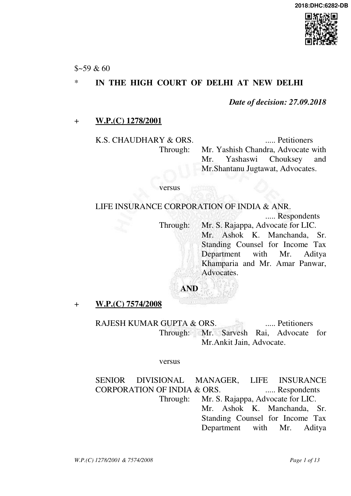
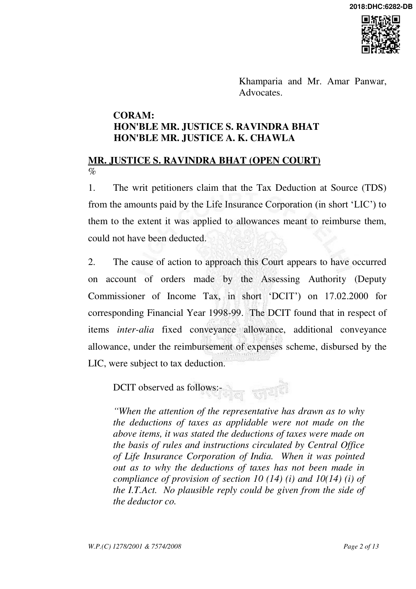

Since the ddductor organisation has not deducted the taxes on the above four items and has allowed exemption in contravention of section 10(14) (i) as such the deductor corporation is liable for additional tax on the above. During the course of proceedings, the attention of the representatives was also invited towards instructions of CBDT clarificatory letter vide F.No.149/25/96-TPL dated 12.03.97 and various other judgments from varbus courts, which clarly lay that these allowances and perquisites are taxable in the hands of the

employees. Not only this, the discussion about the decisions of the various courts were also made that these allowances are taxble and the cooperation much deduct taxes on such allowances. Since the corporation has committed a default by not deducting such taxes as such the additional tax is levibale on such deduction.”
- It appears that the LIC carried the matter unsuccessfully in appeal to the higher authorities. In the meanwhile, the individuals, whose allowances and amounts paid to them were subjected to TDS, approached this Court through these writ petitions complaining that having regard to the wording of Section 10(14)(i) of the Income Tax Act (hereinafter „the Act‟) and the concerned Rules (Income Tax Rules, 1962, which were amended in 1995 with the inclusion of a new rule on this aspect i.e. Rule 2BB), the amounts treated as tax and subjected to TDS did not bear the stamp of authorized levy but rather were excluded from the category of “income”. To say so, the petitioners relied upon the Division Bench ruling of Rajasthan High Court reported as Life Insurance Corporation of India vs. Union of India (UOI) and Ors., (2003) 260 ITR 41 (Raj).
- The petitioners worked as Development Officers at the relevant time, many of them continue to do so. The relevant part of the terms and conditions indicate that their duties included the development and increase of LIC‟s footprint in a planned way; guidance, supervision and activities of the agents placed under their supervision, introduction of new and suitable persons for appointment as agents, rendering services to policyholders; carry out the investigation of claims, revival of lapsed policies and liaison work in connection with savings schemes etc.
- Clause 6, which has some relevance to the present controversy, reads

as follows: “6. TOURS: i) If you are required by the corporation to undertake tours, you should chalk out a programme of the same and get it approved by your Branch Manager one month in advance of the tour. You shall adhere to the tour programme and if any change becomes necessary, you shall do so only after obtaining the prior approval of the Branch Manager. ii) The main object of tours shall be to develop new business, to activise the existing agents, to locate person suitable for appointment as new agents, where such appointments are necessary, and to tap the potentiality of the area. You shall also utilise your tours for rendering all necessary assistance to the policy-holders of the corporation in the matter of policyservicing. iii) You shall be paid either travelling allowance in accordance with the rules of the Corporation in force from time to time governing payment of such allowance or a fixed Travelling allowance, as may be specified by the Competent Authority to meet the expenses of your tour. iv) Immediately on completion of a tour and in any case within 15 days thereafter, you shall submit your tour report in the specified form with the relevant statements to the Branch Office.”
- The petitioners have also placed on record a circular issued by the LIC to all its Zonal Managers and Officers with respect to the allowances payable to the Development Officers – indicating in a tabular manner the specific amounts payable in different areas. The learned counsel for the petitioners relied upon the certificate issued by the LIC, to the individual petitioners. The said certificate, inter-alia, states as follows:

“(D) The following amounts were paid to the employee to meet the expenses wholly, necessarily and exclusively incurred in the performance of the development duty and have been actually incurred wholly for that purpose, as such, they are exempt from Income Tax U/s 10(14) of Income tax Act and, therefore, no tax has been deducted at source.
- (a) Conveyance Allowance: Rs.19643-
- Additional Conveyance allowance : Rs.59847-
- 80% Vehicle Insurance Premium: Rs. 2241-
- 80% of Road Tax on Vehicle: Rs. 156/- The amount specified “(D)”, (i), (a) & (b) above, however, does not purport to be full expenditure incurred by him in this regard and the employee may, in appropriate circumstance, move the Income Tax Authority in respect of additional clause be may have for any amount wholly, necessarily and exclusively spent by him in the performance of the development duty.”
- Learned counsel for the Revenue submitted that this Court should not grant relief. It was urged that as a matter of law the petitioners could not claim that all amounts paid to them towards conveyance were, per se, tax deductable. Drawing to the notice of the Court the table appended to Rule 2BB, it was submitted that unless the employee or the tax assessee/employer would specifically relate to expenditure incurred - citywise or item-wise to one or the other head of the chart or tabular statement, the exemptions claimed could not be granted for the asking given the mandate of Section 10(14) of the Act, which left it out to the rule making authority to prescribe the modalities of what was permissible exclusion. It was secondly urged that the LIC had deducted the amounts and thereafter as an aggrieved assessee carried the matter in appeal but lost. In the

circumstances, the matter had attained finality. It was argued lastly that even otherwise during the concerned and particular assessment years, the individual employees as tax assessee had paid amounts that they were liable to taxes and in the course of those assessment adjustments, due credit to the amounts for which TDS deductions, were given. In these proceedings, it was submitted that there was irreversibility with respect to the entire matter and that the Court should not grant relief.
- The learned counsel for the LIC urged that the petitioners‟ claim cannot exceed what was permissible to them in terms of the conditions of their employment, more particularly, what was spelt out in the circular dated 18.03.1991 or any other circular, which was applicable at the relevant time.
- Section 10 of the Act which defines what is not income, inter-alia, proviso to Section 10(14) provides the allowances or benefits - which were not specified under Section 10(14)(ii) of the Act, which are granted to meet the expenses “wholly, necessarily and exclusively incurred in the performance of the duties of an office or employment” are not to be treated as income. The provision states as follows: “10(14) (i) any such special allowance or benefit, not being in the nature of a perquisite within the meaning of clause (2) of section 17, specifically granted to meet expenses wholly, necessarily and exclusively incurred in the performance of the duties of an office or employment of profit [as may be prescribed], to the extent to which such expenses are actually incurred

for that purpose;
- any such allowance granted to the assessee either to meet his personal expenses at the place where the duties of his office or employment of profit are ordinarily performed by him or at the place where he ordinarily resides, or to compensate him for the increased cost of living, [as may be prescribed and to the extent as may be prescribed]. [Provided that nothing in sub-clause (ii) shall apply to any allowance in the nature of personal allowance granted to the assessee to remunerate or compensate him for performing duties of a special nature relating to his office or employment unless such allowance is related to the place of his posting or residence].”
- As can be discerned from the above, the reference made by the Parliament to expenditures is to those which are wholly, necessarily and exclusively incurred in the performance of the duties of an office or employment of profit – “as may be prescribed” to the extent to which such expenses are actually incurred for that purpose.
Rule 2BB of the Act states as follows:- “2BB. (1) For the purposes of sub-clause (i) of clause (14) of section 10, prescribed allowances, by whatever name called, shall be the following namely:—
- any allowance granted to meet the cost of travel on tour or on transfer;
- any allowance, whether, granted on tour or for the period of journey in connection with transfer, to meet the ordinary daily charges incurred by an employee on account of absence from his normal place of duty;
- any allowance granted to meet the expenditure incurred on conveyance in performance of duties of

an office or employment of profit: Provided that free conveyance is not provided by the employer.
- any allowance granted to meet the expenditure incurred on a helper where such helper is engaged for the performance of the duties of an office or employment of profit;
- any allowance granted for encouraging the academic, research and training pursuits in educational and research institutions;
- any allowance granted to meet the expenditure incurred on the purchase or maintenance of uniform for wear during the performance of the duties of an office or employment of profit. Explanation : For the purpose of clause (a), “allowance granted to meet the cost of travel on transfer” includes any sum paid in connection with transfer, packing and transportation of personal effects on such transfer.
- For the purposes of sub-clause (i) of clause (14) of section 10, prescribed allowances, by whatever name called, shall be the following namely:— TABLE xxx xxx xxx Provided that any assessee claiming exemption in respect of the allowances mentioned at serial numbers 7 and 8 shall not be entitled to the exemption in respect of the allowance referred to at serial number 2: Provided further that any assessee claiming exemption in respect of the allowance mentioned at serial number 9 shall not be entitled to the exemption in respect of disturbed area allowance referred to at serial number 2.”
- In this case the DCIT specifically referred to Section 10(14)(i) of the Act and was of the opinion that the provision was not complied with. The order – as is evident from the relevant extract, nowhere discusses how the

reimbursement of expenses towards conveyance allowance and additional conveyance allowance having regard to the incidence of travelling to be undertaken by the Development Officers, all of whom are before this Court, had to be treated as income. The submissions of the Revenue, in the course of the present proceedings, were premised upon application of Section 10(14)(ii) of the Act. That provision spells out the chart which lists exhaustively the kind of allowances applicable in case the concerned provision of Section 10(14)(ii) of the Act is involved. This Court is, therefore, of the opinion that as to whether a particular kind of expenditure is necessary and is exclusively incurred or to be incurred in the function intimately connected with the employment requires to be inquired into especially in the context of commercial organisations like the LIC. The Development Officers are charged with the responsibility of increasing the business of the Corporation in the areas under their supervision. Apparently, this involves a range of duties that also calls for extensive travelling within the city or touring outside the city including in rural areas. The circulars referring to the terms of the employment clearly indicate that LIC expects such Development Officers to routinely travel within the city and also undertake journey outside city periodically. Given these impediments, the analogy which the DCIT appears to have drawn by comparing the chart, which referred to Section 10(14)(ii) of the Act, and granting relief limited to the extent the chart indicated, was not appropriate. In this regard this Court is of the opinion that the decision of the employer to grant the allowance either on actual reimbursement after verifying it or spare itself the added responsibility of verifying it but based upon observing a general pattern give a lump-sum allowance, which either covers it fully or

in part leaving the rest to be reimbursed, if a higher amount was incurred, was a business or commercial decision. In these circumstances, the stereotypical approach adopted by the DCIT was clearly not warranted. What the Central Government or the State Government might permit their employees or officers under the employment or having authority of law cannot blindly be applied to other organisations – even to the Public Sector Units which are expected to be organised on commercial pattern and have entire different objectives.
- The judgment of the Rajasthan High Court in Life Insurance Corporation of India (supra) has dealt with this very aspect and concluded that:- “28. It is, thus, evident that the conveyance allowance and the additional conveyance allowance are paid to the Development Officers for meeting actual expenditure incurred by them in discharge of their field duties and, thus, wholly, necessarily and exclusively for meeting such expenditure, the allowance is being exempt as per the norms set out in the Life Insurance Corporation circular dated August 3, 1987, referred to in the preceding para. It appears that the Life Insurance Corporation has worked out the additional conveyance allowance to the Development Officers considering the probable expenditure for procuring the business. The Life Insurance Corporation appears to have devised the general formula having a reference to the parameters of the business and, thus, the payment of additional conveyance allowance is a reimbursement for actual expenditure incurred by the Development Officers on account of conveyance in relation to performance of their duties and the said expenditure has a direct nexus with the performance of duties for development of the insurance business by way of meeting several people

and to enrol new life insurance agents and to meet the insurance persons for encouraging them to take insurance policies. Naturally, in such circumstances, touring expenses are incurred on conveyance. Such conveyance expenses are reimbursed by the employer as per the prescribed norms in the name of additional conveyance allowance. The certificate is given by the LIC-employer of the minimum amount which the Life Insurance Corporation certifies that it is the amount actually spent by the Development Officers in the performance of their duties. The ultimate liability of claiming exemption and proving the same is on the employee-assessee (Development Officers). The exemption limit is restricted by the instructions issued by the Central Board of Direct Taxes from time to time. Therefore, we hold that the Development Officers in the Life Insurance Corporation are entitled to claim exemption under section 10(14) of the Act in respect of conveyance allowance/additional conveyance allowance upon satisfying the conditions that such allowances have actually been spent for the purpose for which they were given wholly, necessarily and exclusively in the performance of duties. Therefore, the Life Insurance Corporation cannot be insisted for deduction of tax to be deducted at source to the extent such conveyance allowance/additional conveyance allowance is exempt under rule 2BB and further such minimum limit is set from time to time. The ultimate liability of claiming exemption and proving the same is on the employeeassessees, i.e., the Development Officers.”
- This Court is not persuaded by the Revenue‟s submissions that since the matter attained finality on account of the rejection of the LIC‟s appeal, no relief can be granted to the individual employees. As observed by the Rajasthan High Court in the Life Insurance Corporation‟s case (supra) the relief is to be granted to individual employees/assessees. That such employees were subjected to TDS which ultimately turned out to be

justified and was implemented by the Life Insurance Corporation which had no choice in the matter, cannot now come back to haunt them and deny them relief. Possibly, the deductions were adjusted ultimately towards the tax liability. The result of the present proceedings would only mean that there will be decreased tax exposure – to the extent that the permissible allowances would not be treated as income. The ultimate TDS liability would then be viewed, depending on the individual facts of each assessee, and the relief by way of refund would have to be worked out.
- In view of the above discussion, the petitioners are entitled to succeed. The respondents, DCIT and the concerned Assessing Officers are hereby directed to facilitate the working out of the reversal of the TDS having regard to the circulars of the LIC (especially circular of 18.03.1991) with respect to the reimbursement of three items i.e. fixed conveyance allowance, additional conveyance allowance and expenses under the head “reimbursement of expenses scheme” .
- The respondent-LIC shall also cooperate in the working out of the amounts so that appropriate orders are made by the concerned Assessing Officer to facilitate the relief.
- The LIC shall also ensure that the amounts withheld from the employee and kept in a fixed deposit are reimbursed having regard to the orders of the Assessing Officer. Towards such reimbursement, the TDS amounts, if any, shall receive the benefit of spread out under Section 89 of the Act. The writ petitions are allowed in the above terms.

S. RAVINDRA BHAT (JUDGE) A. K. CHAWLA (JUDGE)
SEPTEMBER 27, 2018 nn